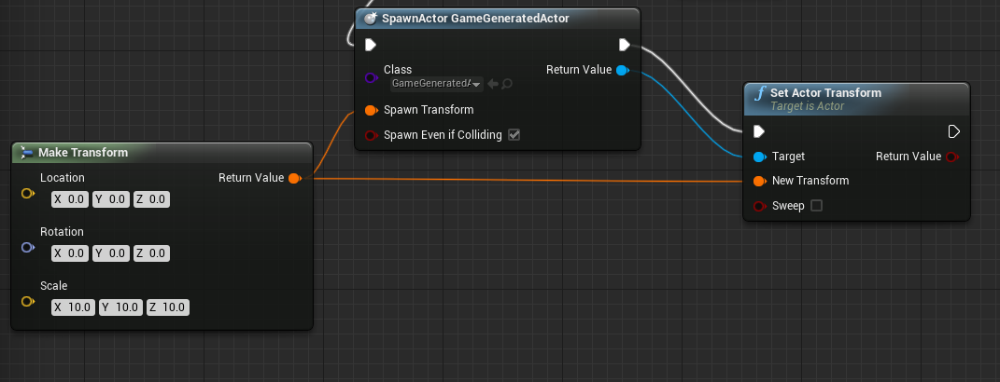
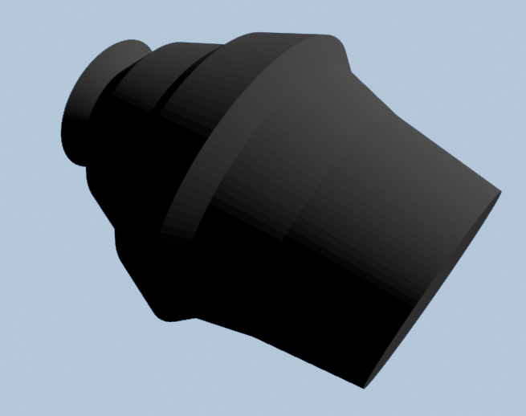

Procedural Mesh Generation
This is a very simple demonstration on how to generate procedural meshes and spawn them in game. It is not to be taken as an example of proper programming technique, but only as an indication to help you generate your own meshes.
You can get this up-to-date demo code in a working UE 4.7 project on GitHub .
Please note that this no longer works in 4.8 because Epic added an official component with the same name (UProceduralMeshComponent) and similar functionality . Check this Wiki page to find a tutorial for it: .
The following assumes you already have a project created. However, you will need to add RHI, RenderCore and ShaderCore modules in your build file.
PublicDependencyModuleNames.AddRange(new string[] { "Core", "CoreUObject", "Engine", "InputCore", "RHI", "RenderCore", "ShaderCore" });
Contents
Creating a Generated Mesh class
The Unreal Engine 4 sources come with a CustomMeshComponent under Engine\Plugins\Runtime\CustomMeshComponent. I had trouble with using it as a plugin (link error), so I have reimplemented it. Essentially, copy the files to your project and rename them GeneratedMeshComponent (.h/.cpp). Replace all occurences of "Custom" to "Generated". You will need to add your project header to the cpp file. Otherwise, the code as I have use it is untouched.
This step may not be required, see Update 7 below.
Here they are as they appear in my test project:
GeneratedMeshComponent.h
// Copyright 1998-2014 Epic Games, Inc. All Rights Reserved.
#pragma once
#include "GeneratedMeshComponent.generated.h"
USTRUCT(BlueprintType)
struct FGeneratedMeshTriangle
{
GENERATED_USTRUCT_BODY()
UPROPERTY(EditAnywhere, Category=Triangle)
FVector Vertex0;
UPROPERTY(EditAnywhere, Category=Triangle)
FVector Vertex1;
UPROPERTY(EditAnywhere, Category=Triangle)
FVector Vertex2;
};
/** Component that allows you to specify custom triangle mesh geometry */
UCLASS(editinlinenew, meta=(BlueprintSpawnableComponent), ClassGroup=Rendering)
class UGeneratedMeshComponent : public UMeshComponent, public IInterface_CollisionDataProvider
{
GENERATED_UCLASS_BODY()
public:
/** Set the geometry to use on this triangle mesh */
UFUNCTION(BlueprintCallable, Category="Components|GeneratedMesh")
bool SetGeneratedMeshTriangles(const TArray<FGeneratedMeshTriangle>& Triangles);
/** Description of collision */
UPROPERTY(BlueprintReadOnly, Category="Collision")
class UBodySetup* ModelBodySetup;
// Begin UMeshComponent interface.
virtual int32 GetNumMaterials() const OVERRIDE;
// End UMeshComponent interface.
// Begin Interface_CollisionDataProvider Interface
virtual bool GetPhysicsTriMeshData(struct FTriMeshCollisionData* CollisionData, bool InUseAllTriData) OVERRIDE;
virtual bool ContainsPhysicsTriMeshData(bool InUseAllTriData) const OVERRIDE;
virtual bool WantsNegXTriMesh() OVERRIDE { return false; }
// End Interface_CollisionDataProvider Interface
// Begin UPrimitiveComponent interface.
virtual FPrimitiveSceneProxy* CreateSceneProxy() OVERRIDE;
virtual class UBodySetup* GetBodySetup() OVERRIDE;
// End UPrimitiveComponent interface.
void UpdateBodySetup();
void UpdateCollision();
private:
// Begin USceneComponent interface.
virtual FBoxSphereBounds CalcBounds(const FTransform & LocalToWorld) const OVERRIDE;
// Begin USceneComponent interface.
/** */
TArray<FGeneratedMeshTriangle> GeneratedMeshTris;
friend class FGeneratedMeshSceneProxy;
};
GeneratedMeshComponent.cpp
// Copyright 1998-2014 Epic Games, Inc. All Rights Reserved.
#include "MyProject5.h"
#include "DynamicMeshBuilder.h"
#include "GeneratedMeshComponent.h"
#include "Runtime/Launch/Resources/Version.h" // for ENGINE_xxx_VERSION
/** Vertex Buffer */
class FGeneratedMeshVertexBuffer : public FVertexBuffer
{
public:
TArray<FDynamicMeshVertex> Vertices;
virtual void InitRHI()
{
#if ENGINE_MAJOR_VERSION >= 4 && ENGINE_MINOR_VERSION >= 3
FRHIResourceCreateInfo CreateInfo;
VertexBufferRHI = RHICreateVertexBuffer(Vertices.Num() * sizeof(FDynamicMeshVertex),BUF_Static,CreateInfo);
#else
VertexBufferRHI = RHICreateVertexBuffer(Vertices.Num() * sizeof(FDynamicMeshVertex),NULL,BUF_Static);
#endif
// Copy the vertex data into the vertex buffer.
void* VertexBufferData = RHILockVertexBuffer(VertexBufferRHI,0,Vertices.Num() * sizeof(FDynamicMeshVertex), RLM_WriteOnly);
FMemory::Memcpy(VertexBufferData,Vertices.GetTypedData(),Vertices.Num() * sizeof(FDynamicMeshVertex));
RHIUnlockVertexBuffer(VertexBufferRHI);
}
};
/** Index Buffer */
class FGeneratedMeshIndexBuffer : public FIndexBuffer
{
public:
TArray<int32> Indices;
virtual void InitRHI()
{
#if ENGINE_MAJOR_VERSION >= 4 && ENGINE_MINOR_VERSION >= 3
FRHIResourceCreateInfo CreateInfo;
IndexBufferRHI = RHICreateIndexBuffer(sizeof(int32),Indices.Num() * sizeof(int32),BUF_Static,CreateInfo);
#else
IndexBufferRHI = RHICreateIndexBuffer(sizeof(int32),Indices.Num() * sizeof(int32),NULL,BUF_Static);
#endif
// Write the indices to the index buffer.
void* Buffer = RHILockIndexBuffer(IndexBufferRHI,0,Indices.Num() * sizeof(int32),RLM_WriteOnly);
FMemory::Memcpy(Buffer,Indices.GetTypedData(),Indices.Num() * sizeof(int32));
RHIUnlockIndexBuffer(IndexBufferRHI);
}
};
/** Vertex Factory */
class FGeneratedMeshVertexFactory : public FLocalVertexFactory
{
public:
FGeneratedMeshVertexFactory()
{}
/** Initialization */
void Init(const FGeneratedMeshVertexBuffer* VertexBuffer)
{
check(!IsInRenderingThread());
ENQUEUE_UNIQUE_RENDER_COMMAND_TWOPARAMETER(
InitGeneratedMeshVertexFactory,
FGeneratedMeshVertexFactory*,VertexFactory,this,
const FGeneratedMeshVertexBuffer*,VertexBuffer,VertexBuffer,
{
// Initialize the vertex factory's stream components.
DataType NewData;
NewData.PositionComponent = STRUCTMEMBER_VERTEXSTREAMCOMPONENT(VertexBuffer,FDynamicMeshVertex,Position,VET_Float3);
NewData.TextureCoordinates.Add(
FVertexStreamComponent(VertexBuffer,STRUCT_OFFSET(FDynamicMeshVertex,TextureCoordinate),sizeof(FDynamicMeshVertex),VET_Float2)
);
NewData.TangentBasisComponents[0] = STRUCTMEMBER_VERTEXSTREAMCOMPONENT(VertexBuffer,FDynamicMeshVertex,TangentX,VET_PackedNormal);
NewData.TangentBasisComponents[1] = STRUCTMEMBER_VERTEXSTREAMCOMPONENT(VertexBuffer,FDynamicMeshVertex,TangentZ,VET_PackedNormal);
NewData.ColorComponent = STRUCTMEMBER_VERTEXSTREAMCOMPONENT(VertexBuffer, FDynamicMeshVertex, Color, VET_Color);
VertexFactory->SetData(NewData);
});
}
};
//////////////////////////////////////////////////////////////////////////
UGeneratedMeshComponent::UGeneratedMeshComponent( const FPostConstructInitializeProperties& PCIP )
: Super( PCIP )
{
PrimaryComponentTick.bCanEverTick = false;
}
bool UGeneratedMeshComponent::SetGeneratedMeshTriangles(const TArray<FGeneratedMeshTriangle>& Triangles)
{
GeneratedMeshTris = Triangles;
UpdateCollision();
// Need to recreate scene proxy to send it over
MarkRenderStateDirty();
return true;
}
FPrimitiveSceneProxy* UGeneratedMeshComponent::CreateSceneProxy()
{
/** Scene proxy defined only inside the scope of this one function */
class FGeneratedMeshSceneProxy : public FPrimitiveSceneProxy
{
public:
FGeneratedMeshSceneProxy(UGeneratedMeshComponent* Component)
: FPrimitiveSceneProxy(Component)
#if ENGINE_MAJOR_VERSION >= 4 && ENGINE_MINOR_VERSION >= 5
, MaterialRelevance(Component->GetMaterialRelevance(ERHIFeatureLevel::SM4)) // Feature level defined by the capabilities of DX10 Shader Model 4.
#else
, MaterialRelevance(Component->GetMaterialRelevance())
#endif
{
const FColor VertexColor(255,255,255);
// Add each triangle to the vertex/index buffer
for(int TriIdx=0; TriIdx<Component->GeneratedMeshTris.Num(); TriIdx++)
{
FGeneratedMeshTriangle& Tri = Component->GeneratedMeshTris[TriIdx];
const FVector Edge01 = (Tri.Vertex1 - Tri.Vertex0);
const FVector Edge02 = (Tri.Vertex2 - Tri.Vertex0);
const FVector TangentX = Edge01.SafeNormal();
const FVector TangentZ = (Edge02 ^ Edge01).SafeNormal();
const FVector TangentY = (TangentX ^ TangentZ).SafeNormal();
FDynamicMeshVertex Vert0;
Vert0.Position = Tri.Vertex0;
Vert0.Color = VertexColor;
Vert0.SetTangents(TangentX, TangentY, TangentZ);
int32 VIndex = VertexBuffer.Vertices.Add(Vert0);
IndexBuffer.Indices.Add(VIndex);
FDynamicMeshVertex Vert1;
Vert1.Position = Tri.Vertex1;
Vert1.Color = VertexColor;
Vert1.SetTangents(TangentX, TangentY, TangentZ);
VIndex = VertexBuffer.Vertices.Add(Vert1);
IndexBuffer.Indices.Add(VIndex);
FDynamicMeshVertex Vert2;
Vert2.Position = Tri.Vertex2;
Vert2.Color = VertexColor;
Vert2.SetTangents(TangentX, TangentY, TangentZ);
VIndex = VertexBuffer.Vertices.Add(Vert2);
IndexBuffer.Indices.Add(VIndex);
}
// Init vertex factory
VertexFactory.Init(&VertexBuffer);
// Enqueue initialization of render resource
BeginInitResource(&VertexBuffer);
BeginInitResource(&IndexBuffer);
BeginInitResource(&VertexFactory);
// Grab material
Material = Component->GetMaterial(0);
if(Material == NULL)
{
Material = UMaterial::GetDefaultMaterial(MD_Surface);
}
}
virtual ~FGeneratedMeshSceneProxy()
{
VertexBuffer.ReleaseResource();
IndexBuffer.ReleaseResource();
VertexFactory.ReleaseResource();
}
virtual void DrawDynamicElements(FPrimitiveDrawInterface* PDI,const FSceneView* View)
{
QUICK_SCOPE_CYCLE_COUNTER( STAT_GeneratedMeshSceneProxy_DrawDynamicElements );
const bool bWireframe = View->Family->EngineShowFlags.Wireframe;
auto WireframeMaterialInstance = new FColoredMaterialRenderProxy(
GEngine->WireframeMaterial ? GEngine->WireframeMaterial->GetRenderProxy(IsSelected()) : NULL,
FLinearColor(0, 0.5f, 1.f)
);
FMaterialRenderProxy* MaterialProxy = NULL;
if(bWireframe)
{
MaterialProxy = &WireframeMaterialInstance;
}
else
{
MaterialProxy = Material->GetRenderProxy(IsSelected());
}
// Draw the mesh.
FMeshBatch Mesh;
FMeshBatchElement& BatchElement = Mesh.Elements[0];
BatchElement.IndexBuffer = &IndexBuffer;
Mesh.bWireframe = bWireframe;
Mesh.VertexFactory = &VertexFactory;
Mesh.MaterialRenderProxy = MaterialProxy;
#if ENGINE_MAJOR_VERSION >= 4 && ENGINE_MINOR_VERSION >= 5
BatchElement.PrimitiveUniformBuffer = CreatePrimitiveUniformBufferImmediate(GetLocalToWorld(), GetBounds(), GetLocalBounds(), true, UseEditorDepthTest());
#else
BatchElement.PrimitiveUniformBuffer = CreatePrimitiveUniformBufferImmediate(GetLocalToWorld(), GetBounds(), GetLocalBounds(), true);
#endif
BatchElement.FirstIndex = 0;
BatchElement.NumPrimitives = IndexBuffer.Indices.Num() / 3;
BatchElement.MinVertexIndex = 0;
BatchElement.MaxVertexIndex = VertexBuffer.Vertices.Num() - 1;
Mesh.ReverseCulling = IsLocalToWorldDeterminantNegative();
Mesh.Type = PT_TriangleList;
Mesh.DepthPriorityGroup = SDPG_World;
PDI->DrawMesh(Mesh);
}
virtual FPrimitiveViewRelevance GetViewRelevance(const FSceneView* View)
{
FPrimitiveViewRelevance Result;
Result.bDrawRelevance = IsShown(View);
Result.bShadowRelevance = IsShadowCast(View);
Result.bDynamicRelevance = true;
MaterialRelevance.SetPrimitiveViewRelevance(Result);
return Result;
}
virtual bool CanBeOccluded() const OVERRIDE
{
return !MaterialRelevance.bDisableDepthTest;
}
virtual uint32 GetMemoryFootprint( void ) const { return( sizeof( *this ) + GetAllocatedSize() ); }
uint32 GetAllocatedSize( void ) const { return( FPrimitiveSceneProxy::GetAllocatedSize() ); }
private:
UMaterialInterface* Material;
FGeneratedMeshVertexBuffer VertexBuffer;
FGeneratedMeshIndexBuffer IndexBuffer;
FGeneratedMeshVertexFactory VertexFactory;
FMaterialRelevance MaterialRelevance;
};
//Only create if have enough tris
if(GeneratedMeshTris.Num() > 0)
{
return new FGeneratedMeshSceneProxy(this);
}
else
{
return nullptr;
}
}
int32 UGeneratedMeshComponent::GetNumMaterials() const
{
return 1;
}
FBoxSphereBounds UGeneratedMeshComponent::CalcBounds(const FTransform & LocalToWorld) const
{
// Minimum Vector: It's set to the first vertex's position initially (NULL == FVector::ZeroVector might be required and a known vertex vector has intrinsically valid values)
FVector vecMin = GeneratedMeshTris[0].Vertex0;
// Maximum Vector: It's set to the first vertex's position initially (NULL == FVector::ZeroVector might be required and a known vertex vector has intrinsically valid values)
FVector vecMax = GeneratedMeshTris[0].Vertex0;
// Get maximum and minimum X, Y and Z positions of vectors
for (int32 TriIdx = 0; TriIdx < GeneratedMeshTris.Num(); TriIdx++)
{
vecMin.X = (vecMin.X > GeneratedMeshTris[TriIdx].Vertex0.X) ? GeneratedMeshTris[TriIdx].Vertex0.X : vecMin.X;
vecMin.X = (vecMin.X > GeneratedMeshTris[TriIdx].Vertex1.X) ? GeneratedMeshTris[TriIdx].Vertex1.X : vecMin.X;
vecMin.X = (vecMin.X > GeneratedMeshTris[TriIdx].Vertex2.X) ? GeneratedMeshTris[TriIdx].Vertex2.X : vecMin.X;
vecMin.Y = (vecMin.Y > GeneratedMeshTris[TriIdx].Vertex0.Y) ? GeneratedMeshTris[TriIdx].Vertex0.Y : vecMin.Y;
vecMin.Y = (vecMin.Y > GeneratedMeshTris[TriIdx].Vertex1.Y) ? GeneratedMeshTris[TriIdx].Vertex1.Y : vecMin.Y;
vecMin.Y = (vecMin.Y > GeneratedMeshTris[TriIdx].Vertex2.Y) ? GeneratedMeshTris[TriIdx].Vertex2.Y : vecMin.Y;
vecMin.Z = (vecMin.Z > GeneratedMeshTris[TriIdx].Vertex0.Z) ? GeneratedMeshTris[TriIdx].Vertex0.Z : vecMin.Z;
vecMin.Z = (vecMin.Z > GeneratedMeshTris[TriIdx].Vertex1.Z) ? GeneratedMeshTris[TriIdx].Vertex1.Z : vecMin.Z;
vecMin.Z = (vecMin.Z > GeneratedMeshTris[TriIdx].Vertex2.Z) ? GeneratedMeshTris[TriIdx].Vertex2.Z : vecMin.Z;
vecMax.X = (vecMax.X < GeneratedMeshTris[TriIdx].Vertex0.X) ? GeneratedMeshTris[TriIdx].Vertex0.X : vecMax.X;
vecMax.X = (vecMax.X < GeneratedMeshTris[TriIdx].Vertex1.X) ? GeneratedMeshTris[TriIdx].Vertex1.X : vecMax.X;
vecMax.X = (vecMax.X < GeneratedMeshTris[TriIdx].Vertex2.X) ? GeneratedMeshTris[TriIdx].Vertex2.X : vecMax.X;
vecMax.Y = (vecMax.Y < GeneratedMeshTris[TriIdx].Vertex0.Y) ? GeneratedMeshTris[TriIdx].Vertex0.Y : vecMax.Y;
vecMax.Y = (vecMax.Y < GeneratedMeshTris[TriIdx].Vertex1.Y) ? GeneratedMeshTris[TriIdx].Vertex1.Y : vecMax.Y;
vecMax.Y = (vecMax.Y < GeneratedMeshTris[TriIdx].Vertex2.Y) ? GeneratedMeshTris[TriIdx].Vertex2.Y : vecMax.Y;
vecMax.Z = (vecMax.Z < GeneratedMeshTris[TriIdx].Vertex0.Z) ? GeneratedMeshTris[TriIdx].Vertex0.Z : vecMax.Z;
vecMax.Z = (vecMax.Z < GeneratedMeshTris[TriIdx].Vertex1.Z) ? GeneratedMeshTris[TriIdx].Vertex1.Z : vecMax.Z;
vecMax.Z = (vecMax.Z < GeneratedMeshTris[TriIdx].Vertex2.Z) ? GeneratedMeshTris[TriIdx].Vertex2.Z : vecMax.Z;
}
FVector vecOrigin = ((vecMax - vecMin) / 2) + vecMin; /* Origin = ((Max Vertex's Vector - Min Vertex's Vector) / 2 ) + Min Vertex's Vector */
FVector BoxPoint = vecMax - vecMin; /* The difference between the "Maximum Vertex" and the "Minimum Vertex" is our actual Bounds Box */
return FBoxSphereBounds(vecOrigin, BoxPoint, BoxPoint.Size()).TransformBy(LocalToWorld);
}
bool UGeneratedMeshComponent::GetPhysicsTriMeshData(struct FTriMeshCollisionData* CollisionData, bool InUseAllTriData)
{
FTriIndices Triangle;
for(int32 i=0;i<GeneratedMeshTris.Num();i++) {
const FGeneratedMeshTriangle& tri = GeneratedMeshTris[i];
Triangle.v0 = CollisionData->Vertices.Add(tri.Vertex0);
Triangle.v1 = CollisionData->Vertices.Add(tri.Vertex1);
Triangle.v2 = CollisionData->Vertices.Add(tri.Vertex2);
CollisionData->Indices.Add(Triangle);
CollisionData->MaterialIndices.Add(i);
}
CollisionData->bFlipNormals = true;
return true;
}
bool UGeneratedMeshComponent::ContainsPhysicsTriMeshData(bool InUseAllTriData) const
{
return (GeneratedMeshTris.Num() > 0);
}
void UGeneratedMeshComponent::UpdateBodySetup() {
if (ModelBodySetup == NULL) {
ModelBodySetup = ConstructObject<UBodySetup>(UBodySetup::StaticClass(), this);
ModelBodySetup->CollisionTraceFlag = CTF_UseComplexAsSimple;
ModelBodySetup->bMeshCollideAll = true;
}
}
void UGeneratedMeshComponent::UpdateCollision() {
if (bPhysicsStateCreated) {
DestroyPhysicsState();
UpdateBodySetup();
CreatePhysicsState();
ModelBodySetup->InvalidatePhysicsData(); //Will not work in Packaged build
//Epic needs to add support for this
ModelBodySetup->CreatePhysicsMeshes();
}
}
UBodySetup* UGeneratedMeshComponent::GetBodySetup() {
UpdateBodySetup();
return ModelBodySetup;
}
Creating a Generated Actor Class
Next you need to create an Actor-derived class so you can attach the UGeneratedMeshComponent to it and spawn it. Also, to make it accessible to blueprints. Note that this example class should have a TArray<FVector>& input parameter to describe the polyline we are going to rotate, but for our purposes the polyline has been hardcoded.
Create a new class called GameGeneratedActor (i.e. AGameGeneratedActor). There is also a Lathe function that I am including which is very simple, just for the purposes of this exercise. Here's the source for it:
GameGeneratedActor.h
// Copyright 1998-2014 Epic Games, Inc. All Rights Reserved.
#pragma once
#include "GameFramework/Actor.h"
#include "GeneratedMeshComponent.h"
#include "GameGeneratedActor.generated.h"
/**
*
*/
UCLASS()
class AGameGeneratedActor : public AActor
{
GENERATED_UCLASS_BODY()
void Lathe(const TArray<FVector>& points, TArray<FGeneratedMeshTriangle>& triangles, int segments = 64);
};
GameGeneratedActor.cpp
// Copyright 1998-2014 Epic Games, Inc. All Rights Reserved.
#include "MyProject5.h"
#include "GameGeneratedActor.h"
AGameGeneratedActor::AGameGeneratedActor(const class FPostConstructInitializeProperties& PCIP)
: Super(PCIP)
{
UGeneratedMeshComponent* mesh = PCIP.CreateDefaultSubobject<UGeneratedMeshComponent>(this, TEXT("GeneratedMesh"));
//Contains the points describing the polyline we are going to rotate
TArray<FVector> points;
points.Add(FVector(20, 5, 0));
points.Add(FVector(15, 6, 0));
points.Add(FVector(12, 7, 0));
points.Add(FVector(11, 8, 0));
points.Add(FVector(8, 7, 0));
points.Add(FVector(7, 6, 0));
points.Add(FVector(4, 5, 0));
points.Add(FVector(3, 4, 0));
points.Add(FVector(2, 3, 0));
points.Add(FVector(1, 4, 0));
TArray<FGeneratedMeshTriangle> triangles;
Lathe(points, triangles,128);
mesh->SetGeneratedMeshTriangles(triangles);
RootComponent = mesh;
}
void AGameGeneratedActor::Lathe(const TArray<FVector>& points, TArray<FGeneratedMeshTriangle>& triangles, int segments) {
UE_LOG(LogClass, Log, TEXT("AGameGeneratedActor::Lathe POINTS %d"), points.Num());
TArray<FVector> verts;
// precompute some trig
float angle = FMath::DegreesToRadians(360.0f / segments);
float sinA = FMath::Sin(angle);
float cosA = FMath::Cos(angle);
/*
This implementation is rotation around the X Axis, other formulas below
Z Axis Rotation
x' = x*cos q - y*sin q
y' = x*sin q + y*cos q
z' = z
X Axis Rotation
y' = y*cos q - z*sin q
z' = y*sin q + z*cos q
x' = x
Y Axis Rotation
z' = z*cos q - x*sin q
x' = z*sin q + x*cos q
y' = y
*/
//Working point array, in which we keep the rotated line we draw with
TArray<FVector> wp;
for (int i = 0; i < points.Num(); i++) {
wp.Add(points[i]);
}
// Add a first and last point on the axis to complete the triangles
FVector p0(wp[0].X, 0, 0);
FVector pLast(wp[wp.Num() - 1].X, 0, 0);
FGeneratedMeshTriangle tri;
//for each segment draw the triangles clockwise for normals pointing out or counterclockwise for the opposite (this here does CW)
for (int segment = 0; segment<segments; segment++) {
for (int i = 0; i<points.Num() - 1; i++) {
FVector p1 = wp[i];
FVector p2 = wp[i + 1];
FVector p1r(p1.X, p1.Y*cosA - p1.Z*sinA, p1.Y*sinA + p1.Z*cosA);
FVector p2r(p2.X, p2.Y*cosA - p2.Z*sinA, p2.Y*sinA + p2.Z*cosA);
if (i == 0) {
tri.Vertex0 = p1;
tri.Vertex1 = p0;
tri.Vertex2 = p1r;
triangles.Add(tri);
}
tri.Vertex0 = p1;
tri.Vertex1 = p1r;
tri.Vertex2 = p2;
triangles.Add(tri);
tri.Vertex0 = p2;
tri.Vertex1 = p1r;
tri.Vertex2 = p2r;
triangles.Add(tri);
if (i == points.Num() - 2) {
tri.Vertex0 = p2;
tri.Vertex1 = p2r;
tri.Vertex2 = pLast;
triangles.Add(tri);
wp[i + 1] = p2r;
}
wp[i] = p1r;
}
}
}
Spawning the Actor
Once the project has been compiled, the new classes are accessible by Blueprints. So you will need to hook up a SpawnActor in some blueprint and set its class to GameGeneratedActor(I used a PlayerController, and its hooked to a HUD event), and it should look like this (note: I use the transform before and after as it seems to not consider scale on the spawn. In this example I suggest a scale of 10, otherwise the object will be too small)

Once you run the game and trigger the spawn, it should look like this:

For more info, see this thread: Generate Procedural Mesh
Enjoy!
Connecting standard UCustomMeshComponent
UPDATE: Since commit 7c7b614 (Nov. 4th, 2014) the API export macro has been implemented in the native engine code.
If you want to avoid code duplication and standard functionality of UCustomMeshComponent is more than enough for you, you can try to connect CustomMeshPlugin. To avoid link error you should add import/export macro directly to the class header and recompile the engine from source:
// Copyright 1998-2014 Epic Games, Inc. All Rights Reserved.
#pragma once
...
/** Component that allows you to specify custom triangle mesh geometry */
UCLASS(hidecategories=(Object,LOD, Physics, Collision), editinlinenew, meta=(BlueprintSpawnableComponent), ClassGroup=Rendering)
class CUSTOMMESHCOMPONENT_API UCustomMeshComponent : public UMeshComponent
Blueprint implementation
If you want to be able to generate a mesh from blueprints you can do this:
#include "GameFramework/Actor.h"
#include "ProceduralMeshComponent.h"
#include "CustomMeshBridge.generated.h"
/**
* code by Frederic Artus Nieto
*/
UCLASS()
class SSS2_API ACustomMeshBridge : public AActor
{
GENERATED_UCLASS_BODY()
public:
UFUNCTION(BlueprintPure, meta = (FriendlyName = "Make Triangle", Keywords = "New Triangle"), Category = ProceduralMesh)
static FGeneratedMeshTriangle CreateTriangle(FVector vertex0, FVector vertex1, FVector vertex2);
UFUNCTION(BlueprintCallable, meta = (FriendlyName = "Set Mesh Material", Keywords = "Set Mesh Material"), Category = ProceduralMesh)
static void SetMeshMaterial(UProceduralMeshComponent* component, UMaterialInterface* Material);
UFUNCTION(BlueprintCallable, meta = (FriendlyName = "Set Mesh Triangles", Keywords = "Set Mesh Triangles"), Category = ProceduralMesh)
static void SetMeshTriangles(UProceduralMeshComponent* component, TArray<FGeneratedMeshTriangle> Triangles);
};
// code by Frederic Artus Nieto
#include "SSS2.h"
#include "DynamicMeshBuilder.h"
#include "CustomMeshBridge.h"
#include "ConstructorHelpers.h"
ACustomMeshBridge::ACustomMeshBridge(const class FPostConstructInitializeProperties& PCIP)
: Super(PCIP)
{
}
FGeneratedMeshTriangle ACustomMeshBridge::CreateTriangle(FVector vertex0, FVector vertex1, FVector vertex2)
{
FGeneratedMeshTriangle tri;
tri.Vertex0 = vertex0;
tri.Vertex1 = vertex1;
tri.Vertex2 = vertex2;
return tri;
}
void ACustomMeshBridge::SetMeshMaterial(GameGeneratedActor * component, UMaterialInterface* Material)
{
component->SetMaterial(0, Material);
}
void ACustomMeshBridge::SetMeshTriangles(GameGeneratedActor * component, TArray<FGeneratedMeshTriangle> Triangles)
{
component->SetProceduralMeshTriangles(Triangles);
}
Once you made this class, you will see some new nodes in the ProceduralMesh tab when you select a new node in the blueprint editor (you have to untick "Context Sensitive"). Note that you do need to have a GameGeneratedActor component in your actor to do that.
You then have to use the SetMeshTriangles node to apply the new triangles to the GameGeneratedActor. You can do it during runtime to make animated meshes (I had some laggy experience when updating too many vertices). You can apply a material to the mesh with the SetMeshMaterial node if you want. Note that there are no UVs.
Changelog
Update 1
The UGeneratedMeshComponent class has been updated to include collisions. However, this is currently only available within the Editor, as it is related to cooking physics at runtime (which is not supported outside the Editor at this time). Epic will include the capability for version 4.2 or 4.3. See this thread and this thread . Thanks to all who participated in those threads for pointers, credit goes to them. Remember to set SetActorCollisionsEnabled(true) in your Actor! ( ) 18:04, 11 April 2014 (UTC)
Update 2
Added vertex color fix from Ryvar as per this post .
Update 3
RHICreateXXXBuffer function signature changed for 4.3. Put in macro code to make code work both for 4.2 and 4.3
Update 4
Code updated for UE4.5 : #include Version.h for ENGINE_MINOR_VERSION macro, GetMaterialRelevance(::SM5) , CreatePrimitiveUniformBufferImmediate() with UseEditorDepthTest() and comments on mesh collision in cooked game.
Update 5
Add information about solving link problem.
Update 6
Added an example of blueprint implementation. If you made a little build please post a screen of the bluprint if none is there.
Update 7
It is posible to compile without copying the CustomMeshComponent files by including the CustomMeshPlugin as a private module in the <Project>.Build.cs file (original solution found at https://answers.unrealengine.com/questions/13691/using-a-plugin-in-c-code.html ). This is working on version 4.10, make sure the plugin is enabled in the editor Edit->Plugins and by adding it as a private dependency it's no longer really a plugin as it's not optional!
PrivateDependencyModuleNames.AddRange(new string[] { "CustomMeshComponent" });
PrivateIncludePathModuleNames.AddRange(new string[] { "CustomMeshComponent" });
And then the headers can be included with
#include "CustomMeshComponent.h"
Update 8
GetTypeData not available anymore. Use GetData
Update 9
DrawDynamicElements not available anymore. Use GetDynamicMeshElements